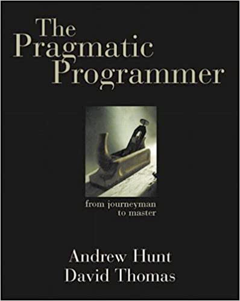

class: center, middle # Do not even DRY <br> <div style="line-height: 1.5em;" class="remark-code"> <div>viktoras bezaras</div> <div><a href="">https://viktoras.de</a></div> <div><a href="">mail@viktoras.de</a></div> <div>2017-03-22</div> </div> --- class: center, middle # DRY: Don't Repeat Yourself ### - The code must only be in one single place ### - Remove duplication ### - Extract repeating code into Helpers --- class: center, middle <h1 style="font-size: 70pt">WRONG</div> --- class: center, middle ## "Every piece of **knowledge** must have a single, unambiguous, authoritative representation within a system"  --- class: center, middle ## What is duplication #### "Maybe we're writing a client-server application, using different languages on the client and server, and need to represent some shared structure on both." #### "Perhaps we need a class whose attributes mirror the schema of a database table." <p style="text-align: right">The Pragmatic Programmer: From Journeyman to Master</p> --- class: middle <b>Dave Thomas</b>: Don't Repeat Yourself (or DRY) is probably one of the most misunderstood parts of the book. <b>Bill Venners</b>: How is DRY misunderstood and what is the correct way to understand it? <b>Dave Thomas</b>: Most people take DRY to mean you shouldn't duplicate code. That's not its intention. The idea behind DRY is far grander than that. <i><small>http://www.artima.com/intv/dry.html</small></i> --- class: center, middle <blockquote> "What, you say? Avoid Helper Classes!?! But they are so useful! I say: they are nearly always an <strong>example of laziness</strong>." <a href="https://blogs.msdn.microsoft.com/nickmalik/2005/09/06/are-helper-classes-evil/">https://blogs.msdn.microsoft.com/nickmalik/2005/09/06/are-helper-classes-evil/</a> </blockquote> <blockquote> "Having the word ‘Helper’ in a class name is a <strong>code smell</strong>." <footer><a href="http://www.robbagby.com/posts/helper-classes-are-a-code-smell/">http://www.robbagby.com/posts/helper-classes-are-a-code-smell/</a></footer> </blockquote> <blockquote> <strong>OOP Anti-Patterns</strong>: Utility or Helper Classes <footer><a href="http://www.ralin.net/articles/oop-anti-patterns-utility-or-helper-classes/">http://www.ralin.net/articles/oop-anti-patterns-utility-or-helper-classes/</a></footer> </blockquote> <blockquote> "Duplication is far cheaper than the wrong abstraction."<br> "Prefer duplication over the wrong abstraction." <footer><a href="https://www.sandimetz.com/blog/2016/1/20/the-wrong-abstraction">https://www.sandimetz.com/blog/2016/1/20/the-wrong-abstraction</a></footer> </blockquote> --- class: center, middle ## Helpers are not DRY --- ## OOP Quality Metrics - ### Cohesion - ### Coupling - ### Connascence --- ## Cohesion Degree to which the elements inside a module belong together - **Functional** (best) - ... - **Logical** - **Coincidental** (worst) <br> ```php // Good - Functional cohesion | // Bad - Logical Cohesion | class Rectangle { | class AreaHelper { private $w; | public function rectangle($w, $h) { private $h; | return $w * $h; | } public function getArea() | { | public function square($s) { return $this->w * $this->h; | return self::rectangle($s, $s); } | } } | } ``` --- ## Coupling Degree of interdependence between software modules - No (best) - **Data/Message** - ... - **Common** - **Content** (worst) ```php // Good - Data/Message coupling | // Bad - Common coupling | class Client { | class Rectangle { public function send(Request $r) { | public function square() { ... | return AreaHelper::rectangle($w, $h); return Response(); | } } | } } | class Square { | public function square() { | return AreaHelper::square($s); | } | } | ``` --- ## Connascence When a change in one module would require the other to be modified. - **Name** (best) - **Meaning** - **Algorithm** - Order of execution - Identity (worst) <br> ```php // Connascence of name new Rectangle(); // Connascence of meaning function posInString() { ...; return -1; } $response = request("BA", $hotel); // Connascence of algorithm $hash = password_hash('qwe', PASSWORD_BCRYPT); password_verify('qwe', $hash); ``` --- <b> Changing two identical independent parts of code is trivial, changing two tightly coupled parts of code is much harder.</b> ```php // Connascence of algorithm. Bad duplication class Sender { public function encode(string $text) { return rot($text, 13); } public function decode(string $text) { return rot($text, -13); } } class Receiver { public function encode(string $text) { return rot($text, 13); } public function decode(string $text) { return rot($text, -13); } } $encoded = (new Sender())->encode('text'); (new Receiver())->decode($encoded); ``` --- <b> Changing two identical independent parts of code is trivial, changing two tightly coupled parts of code is much harder.</b> ```php // No coupling. No connascence. Good duplication. class HotelImport { public function parseXml($xml) { return new SimpleXmlElement($xml); } public function import($data) { $this->parseXml($data); } } class FlightImport { public function parseXml($xml) { return new SimpleXmlElement($xml); } public function import($data) { $this->parseXml($data); } } (new HotelImport())->import('<Hotel/>'); (new FlightImport())->import('<Flight/>'); ``` --- # Takeaways - Forget about DRY - Helpers belong to trash bin - Aim for high cohesion - Aim for low coupling - Aim for low connascence <br> Great videos about connascence: - Codemania 2015: Josh Robb - Connascence & Coupling https://www.youtube.com/watch?v=Ip2o4vbAK3s - ETE 2012 - Jim Weirich - Connascence Examined https://www.youtube.com/watch?v=HQXVKHoUQxY --- class: middle <div style="text-align: center"> <h1>Please ask questions</h1> <div> Slides </div> </div>